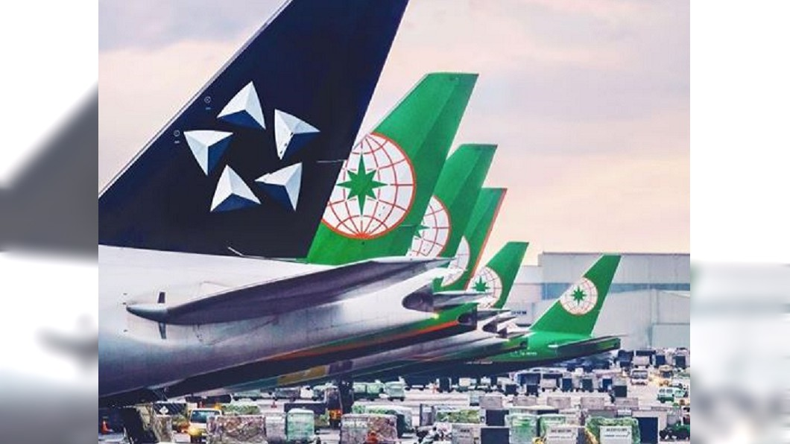
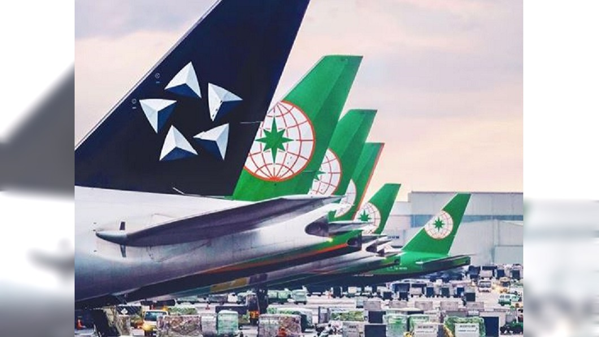

華航更名困難度高 評估報告出爐 涉及29國航權異動
〔記者鄭瑋奇／台北報導〕
 

- 中華航空改名議題受各界關注，航發會昨邀集華航等單會開會討論後
- 針對改名的困難點，華航初步評估內容指出，更名涉及29國航權異動
- 還有營運航線飛越許可、機場時間帶等問題，此外還須向國際組織IATA、ICAO報備
- 但IATA北亞辦事處設於北京、ICAO秘書長為中國籍，擔心遭刁難
- 對於客貨運業務影響，交通部指出，若華航真的改名後
- 若遭中國全面封殺，華航目前占營收24%至25%的中國航線恐歸零，歐洲航線可能也須繞道
- 避開中國或親中國家領空，增加營運上負擔
- 中華航空評估CIS整體設計更改，包含企業商標、飛機塗裝（88架飛機）
- 網路、資訊系統等整體企業識別完成，須5年至10年的時間
- 若只更改簡易飛機塗裝部分（整體88架飛機）考慮噴漆、停機等（正常營運情形下，疫情期間另計）
- 時間須26個月至30個月，若大幅更改機身塗裝須46個月至80個月。
- 另外，企業更名需召開臨時董事會及股東會，至經濟部完成登記變更等行政程序須2個月，所以目前華航傾向以彩繪機方式，來增加台灣識別，並以新機為優先。
- 交通部表示，華航改名涉及多項因素，短期更名不易，請華航列為中長期評估，先準備資料。府院共識飛機塗裝及內裝增加台灣意象、國際識別的部分，
- 針對此議題華航須有具體進度，例如評估內容、圖樣設計、徵求各界意見等，並需以部分飛機先試行。